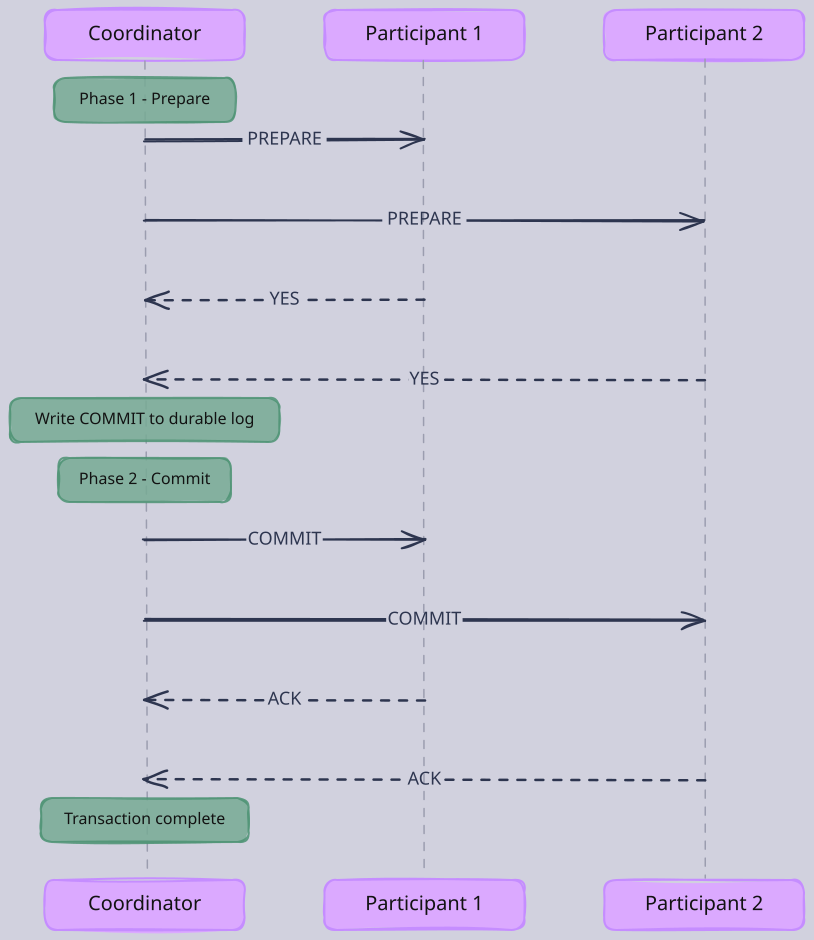
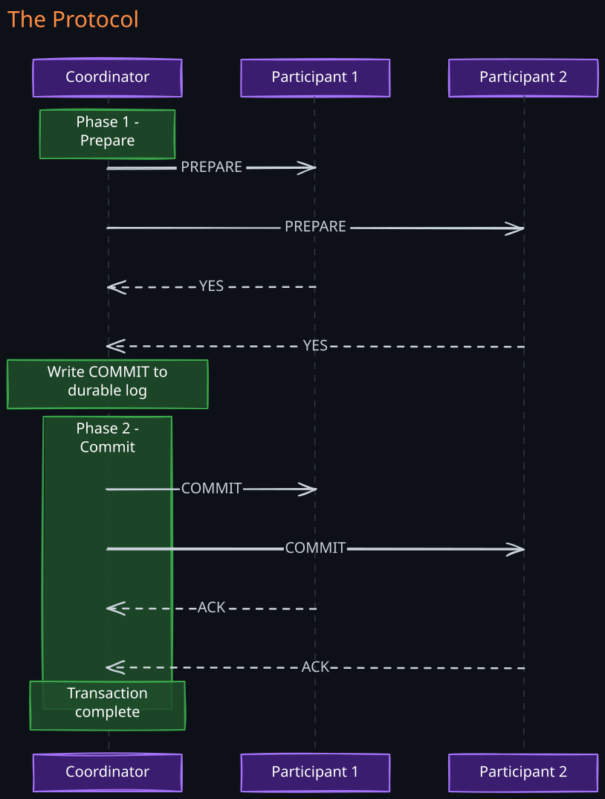
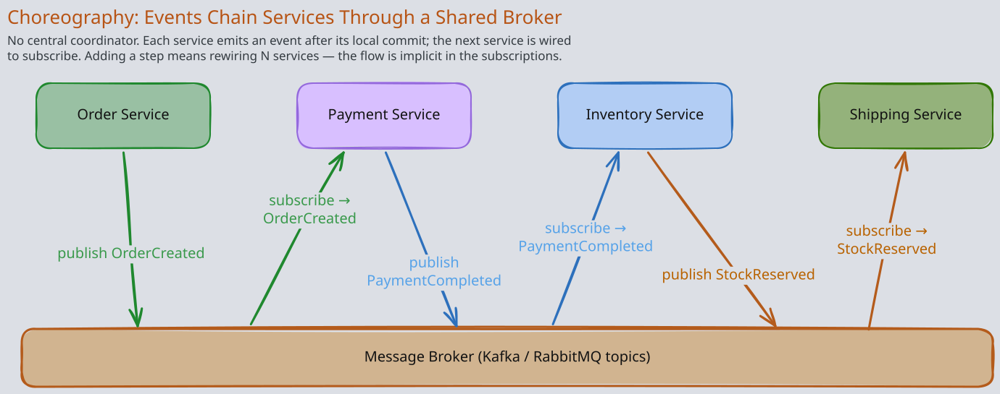
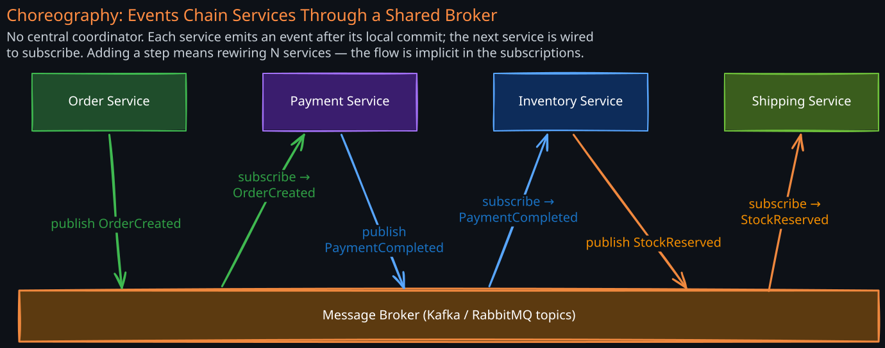
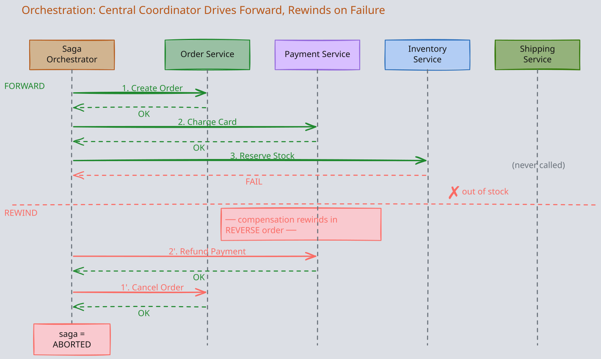
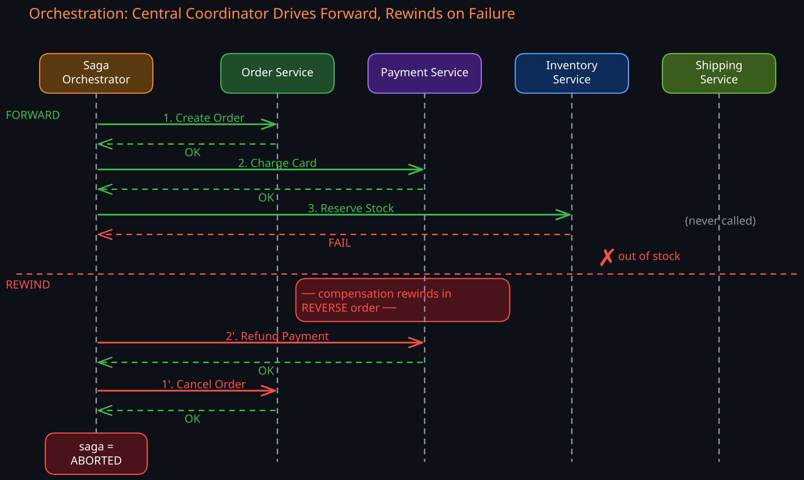
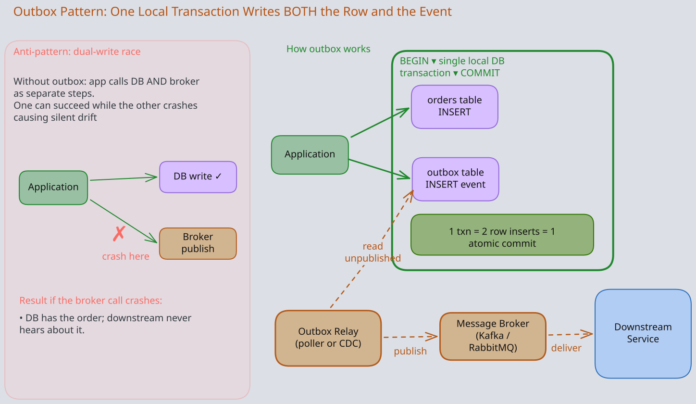
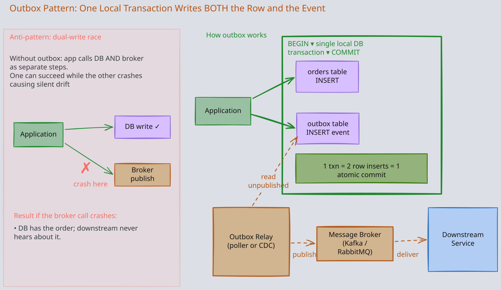

Related: 03-Consensus-Algorithm, 02-CAP-and-PACELC, 04-Distributed-Lock, 01-Choreography-Orchestration, 05-Isolation-Levels, 04-Optimistic-Pessimistic-Locking
The Story
Jim Gray invented the two-phase commit protocol and won the Turing Award for his work on database transactions. In January 2007, he sailed alone out of San Francisco Bay and disappeared. His colleagues at Google, Amazon, and Microsoft organized the largest civilian satellite image search ever — essentially building a massive distributed system to find the man who invented distributed transactions. Thousands of volunteers scanned satellite imagery in parallel, coordinated through Amazon’s Mechanical Turk. They never found him. The irony is haunting: the community that understood coordination better than anyone on earth couldn’t coordinate a search well enough to find one of its founders.
1. Why Distributed Transactions Are Hard
A single-node database transaction is deceptively simple. The database engine controls the entire commit path: it writes a WAL record, flushes to disk, and either the write succeeds atomically or it does not. There is one decision-maker, one failure domain, and one clock. ACID guarantees fall out naturally from this single-authority model.
The moment data lives on more than one node, this model breaks apart. Consider a bank transfer: debit 100 to account B on node 2. On a single database, this is a trivial transaction. Across two nodes, every assumption fails:
- Independent failure domains. Node 1 can crash after debiting while node 2 never receives the credit instruction. Money vanishes.
- No shared state. Node 2 cannot inspect node 1’s transaction log to decide whether to commit. Each node only knows its own state.
- No global clock. You cannot determine “did node 1 commit before or after node 2 crashed?” without a coordination protocol.
- Network partitions. The link between nodes can fail, leaving both nodes uncertain about each other’s state.
The fundamental problem is atomic commitment across independent failure domains: how do you ensure that either all nodes commit or all nodes abort, when any node (or the network between them) can fail at any moment?
This is not merely an engineering challenge. The FLP impossibility result proves that no deterministic protocol can guarantee consensus in an asynchronous system with even one possible crash failure. Every solution to distributed transactions is a pragmatic compromise around this theoretical limit.
2. The Spectrum of Solutions
Distributed transaction approaches form a spectrum from strong consistency to high availability:
Strong Consistency High Availability
| |
2PC -----> 3PC -----> Spanner (2PC+Paxos) -----> Sagas -----> Outbox Pattern
(blocking) (non-blocking (non-blocking, (eventual (eventual,
but fragile) global consensus) consistency) local-first)
Each approach makes different tradeoffs along the 02-CAP-and-PACELC dimensions. Understanding when to use which approach is the core skill.
3. Two-Phase Commit (2PC)
1. The Protocol
2PC is the classical solution to atomic commitment. It introduces a coordinator (transaction manager) that runs a voting protocol across all participants (nodes holding data involved in the transaction). The key insight behind 2PC: split the commit into two phases so that no participant commits until everyone has confirmed they can commit.
Phase 1 — Prepare (Voting)
- The coordinator assigns a globally unique transaction ID and sends a
PREPARErequest to every participant. - Each participant executes the transaction up to the point of commit: writes redo/undo logs to durable storage, acquires locks on affected rows, validates constraints.
- Each participant votes:
YES— “I have durably prepared this transaction and promise to commit if instructed.”NO— “I cannot commit (constraint violation, conflict, resource unavailable).”
- Once a participant votes
YES, it has made an irrevocable promise. It cannot unilaterally abort. It must hold its locks and wait for the coordinator’s decision.
Phase 2 — Commit or Abort (Decision)
If all participants voted YES:
- The coordinator writes a
COMMITrecord to its own durable log. This is the commit point — the single moment that determines the transaction’s fate. - The coordinator sends
COMMITto all participants. - Each participant applies the transaction, releases locks, and acknowledges.
- The coordinator must retry indefinitely until all acknowledgments are received.
If any participant voted NO (or timed out):
- The coordinator writes an
ABORTrecord to its log. - The coordinator sends
ABORTto all participants. - Participants roll back and release locks.


2. The Commit Point and Its Significance
The most important concept in 2PC is the commit point: the moment the coordinator writes COMMIT to its durable log. Before this point, the transaction can still be aborted. After this point, the transaction will commit, regardless of subsequent failures — the coordinator will keep retrying until all participants acknowledge.
Specifically, the coordinator must durably log three things before sending the decision to any participant:
- The transaction ID
- The list of all participants
- The decision itself (COMMIT or ABORT).
If the coordinator crashes after writing COMMIT but before notifying all participants, it re-reads this record on recovery and resends the decision. If it crashes before writing the decision, it defaults to ABORT since the outcome is unknown. This is why the coordinator’s disk is the true single point of failure in 2PC — it is the one component whose loss leaves participants permanently blocked. This means the fate of a distributed transaction affecting potentially billions of dollars across multiple continents is determined by a single disk write on a single machine. This is both the elegance and the vulnerability of 2PC.
3. The Blocking Problem
The critical weakness of 2PC emerges in a specific failure scenario:
- Participant P1 votes
YESin Phase 1. - The coordinator crashes before writing its decision to the log.
- P1 is now stuck: it voted
YES(so it cannot unilaterally abort), but it never received aCOMMITorABORT(so it cannot proceed). It must hold its locks and wait indefinitely for the coordinator to recover.
This is why 2PC is called a blocking protocol. The consequences are severe:
- Lock amplification. P1 holds locks on the rows involved in the transaction. Every other transaction that needs those rows is now blocked too. If the coordinator stays down for minutes or hours, the blocking cascades through the system.
- No safe unilateral action. P1 cannot safely abort (another participant might have received a
COMMIT). It cannot safely commit (the coordinator might have decided to abort). The only safe action is to wait. - Cascading failures. In a system processing thousands of transactions per second, even a brief coordinator outage can cause lock contention to spiral, leading to timeouts, thread pool exhaustion, and system-wide degradation.
4. Coordinator Failure Scenarios
| Failure Point | Coordinator State | Participant State | Resolution |
|---|---|---|---|
Before sending any PREPARE | No record of transaction | Unaware of transaction | Safe — transaction never started |
After sending PREPARE, before collecting all votes | Knows transaction exists | Some in PREPARED state, holding locks | Coordinator recovers, sees no commit decision, aborts |
After collecting all YES votes, before writing commit decision | Has votes in memory only | All in PREPARED state, holding locks | Danger zone — participants blocked until coordinator recovers |
After writing COMMIT to log, before sending COMMIT | Durable commit decision exists | All in PREPARED state, holding locks | Coordinator recovers, reads log, resends COMMIT |
After sending COMMIT, before all ACKs received | Commit decision durable | Some committed, some still prepared | Coordinator recovers, retries COMMIT to unacknowledged participants |
The third row is the catastrophic scenario. The coordinator has enough information to decide but crashed before making that decision durable. Participants are blocked with no recourse.
5. Recovery After Coordinator Crash
When a coordinator restarts, it reads its transaction log:
- Transaction has
COMMITrecord — resendCOMMITto all participants that have not acknowledged. - Transaction has
ABORTrecord — resendABORTto all participants. - Transaction has no decision record — the coordinator crashed before deciding. It aborts the transaction and sends
ABORTto all participants.
Participants that voted YES and are waiting in the prepared state will periodically poll the coordinator (or other participants) for the transaction’s outcome. This polling continues until the coordinator recovers.
6. Participant Timeout Behavior
What should a participant do if it votes YES and never hears back?
- It cannot time out and abort. It made a promise. If another participant received a
COMMIT, unilateral abort would cause inconsistency. - It cannot time out and commit. The coordinator might have decided to abort.
- It can only wait and periodically ask the coordinator (or other participants) for the decision.
Some implementations allow a participant to ask other participants for the outcome. If any participant received a COMMIT or ABORT, it can share that information. But if all participants are in the PREPARED state, none of them can make progress — this is the true deadlock scenario of 2PC.
7. Performance Characteristics
2PC imposes significant overhead:
- Latency. Minimum of 2 round trips (prepare + commit) plus durable log writes on every participant. For geographically distributed nodes, this means hundreds of milliseconds per transaction.
- Lock duration. Locks are held from the start of Phase 1 until the end of Phase 2 — the entire duration of the protocol, including network round trips. This dramatically reduces concurrency compared to local transactions.
- Log writes. The coordinator writes its decision to a durable log. Each participant writes its prepare record. These are synchronous disk writes on the critical path.
- Throughput ceiling. The coordinator becomes a serialization point. Every distributed transaction must pass through it, limiting horizontal scalability.
4. Three-Phase Commit (3PC)
3PC was designed to solve the blocking problem of 2PC by adding an intermediate phase. The intuition is that if we can ensure that no participant commits until it knows that all participants are aware the transaction will commit, then a coordinator crash cannot leave participants in an ambiguous state.
1. The Protocol
3PC adds a PRE-COMMIT phase between voting and committing:
- Phase 1 — Prepare (same as 2PC). Coordinator sends
PREPARE, participants voteYESorNO. - Phase 2 — Pre-Commit. If all voted
YES, coordinator sendsPRE-COMMITto all participants. Participants acknowledge. This phase ensures all participants know the decision before any participant commits. - Phase 3 — Commit. Coordinator sends
COMMIT. Participants apply the transaction.
The key difference: if a participant is in the PRE-COMMIT state and the coordinator crashes, it knows that all other participants also voted YES (otherwise the coordinator would not have sent PRE-COMMIT). It can safely proceed to commit after a timeout, or elect a new coordinator.
2. Why 3PC Fails in Practice
3PC solves the blocking problem only in a synchronous network model — one where you can set a reliable upper bound on message delivery time. In real networks:
- Network partitions. During a partition, one group of participants might be in
PRE-COMMIT(and proceed to commit after timeout), while another group never receivedPRE-COMMIT(and aborts after timeout). The result is inconsistency — exactly what we were trying to prevent. - Asynchronous networks. In practice, you cannot distinguish between a slow message and a lost message. A participant that times out waiting for
PRE-COMMITmight abort, while the coordinator eventually deliversPRE-COMMITto others who then commit.
This is why 3PC is rarely used in production systems. It adds complexity (three round trips instead of two) without providing the safety guarantee it promises in real-world networks. The industry has largely moved toward either making 2PC more robust (Spanner’s approach) or avoiding distributed transactions entirely (Sagas).
5. Sagas
1. The Core Idea
Sagas take a fundamentally different approach. Instead of trying to make a distributed transaction atomic, a saga breaks it into a sequence of local transactions, each of which commits independently. If a step fails partway through, previously completed steps are reversed by executing compensating transactions.
The key insight: we give up atomicity and isolation in exchange for availability and loose coupling. The system is temporarily inconsistent during saga execution but eventually reaches a consistent state — either all steps complete or all completed steps are compensated.
2. What a Saga Gives Up
A saga provides ACD guarantees but not I (isolation):
- Atomicity — achieved through compensating transactions (either all steps complete or all are reversed).
- Consistency — the system moves from one valid state to another, but intermediate states may be visible.
- Durability — each local transaction is durable within its service.
- No Isolation — other transactions can observe intermediate states. This is the fundamental tradeoff.
3. Compensating Transactions
A compensating transaction is not an undo or rollback. It is a new forward transaction that semantically reverses the effect of a previously committed transaction. This distinction matters:
- Debiting 100 — not by deleting the debit record.
- Creating an order is compensated by cancelling the order — which might involve creating a cancellation record, sending a notification, and updating analytics.
- Sending an email cannot be compensated. You can send an apology email, but you cannot unsend the original.
Compensating transactions must be idempotent (safe to execute multiple times) because the saga coordinator may retry them on failure. They must also handle the case where the original transaction’s effects have already been partially consumed by other parts of the system.
4. Choreography vs Orchestration
There are two models for coordinating saga execution: Choreography — each service publishes domain events when its local transaction completes, and other services react to those events. There is no central coordinator.


Orchestration — a central saga orchestrator tells each service what to do and tracks the overall state of the saga. The orchestrator is a state machine that owns the flow. It commands each service in order, listens for replies, and on failure issues compensating commands to the already-completed services in REVERSE order.


| Aspect | Choreography | Orchestration |
|---|---|---|
| Coupling | Loose — services only know about events | Tighter — orchestrator knows all services |
| Visibility | Hard to trace — flow is implicit in event subscriptions | Easy to trace — flow is explicit in orchestrator |
| Failure handling | Each service handles its own compensation | Orchestrator manages all compensation |
| Complexity scaling | Grows rapidly with number of services — event chains become hard to reason about | Grows linearly — orchestrator becomes more complex but flow remains readable |
| Single point of failure | None | Orchestrator (must be highly available) |
| Best for | Simple sagas with 2-4 steps | Complex sagas with many steps, branching logic, or complex compensation |
5. Isolation Challenges in Sagas
The lack of isolation creates several concurrency anomalies:
- Dirty reads. A saga creates an order (step 1), then payment fails (step 2). Between step 1 committing and the compensation executing, other services can read the order and act on it. A notification service might send an “order confirmed” email for an order that will be cancelled moments later.
- Lost updates. Two concurrent sagas modify the same entity. Saga A reads inventory count = 10, reserves 3 (sets to 7). Saga B reads inventory count = 10 (before A’s write is visible), reserves 5 (sets to 5). Saga A’s reservation is silently lost.
- Non-repeatable reads. A saga reads data at step 1, makes a decision based on it, but by step 3 another saga has changed that data. The decision made at step 1 is now based on stale information.
Countermeasures:
- Semantic locking. Add a
statusfield (e.g.,PENDING,CONFIRMED,CANCELLED) so readers know the data is part of an in-progress saga. - Commutative updates. Design operations that produce the same result regardless of execution order (e.g.,
increment by 3rather thanset to 7). - Pessimistic view. Reread data before critical steps to detect changes.
- Reread value. Before compensating, verify the current state matches expectations.
- Version vector / optimistic locking. Use version numbers to detect concurrent modifications.
6. Non-Reversible Actions
Some actions cannot be compensated:
- Sending an email or push notification
- Calling an external third-party API (payment processor charge)
- Publishing data to a public feed
- Physical actions (shipping a package)
The design strategy: place non-reversible actions as late as possible in the saga, after all steps that might fail have completed. If a non-reversible action itself fails, you may need manual intervention or a dead-letter queue for human review.
6. The Outbox Pattern
The outbox pattern solves a subtle but critical problem in event-driven architectures: how do you atomically update a database and publish an event? If you update the database and then publish to Kafka, the publish might fail (data updated, no event). If you publish first and then update, the update might fail (event sent, no data change).
1. How It Works
- The service writes both the data change and the outbox event to the same local database in a single local transaction.
- A separate process (the “relay” or “poller”) reads unpublished events from the outbox table and publishes them to the message broker.
- After successful publish, the relay marks the event as published.


2. Relay Implementation: Polling vs CDC
Polling: A background thread queries the outbox table periodically (SELECT * FROM outbox WHERE published = false). Simple but introduces latency (polling interval) and database load.
Change Data Capture (CDC): Tools like Debezium read the database’s transaction log (WAL/binlog) and emit events in real time. Lower latency, no polling overhead, but adds infrastructure complexity.
3. Why Outbox Matters
The outbox pattern is the foundational building block for reliable sagas in microservices. Without it, event-driven choreography is unreliable — you cannot guarantee that a local commit and its corresponding event are both delivered. With it, you get at-least-once event delivery, which combined with idempotent consumers gives you effectively-once processing.
7. Idempotency and Exactly-Once Semantics
Distributed transactions and saga compensation rely heavily on at-least-once delivery — messages may be delivered more than once due to retries, network issues, or relay restarts. The system must handle duplicates gracefully.
1. Idempotency Keys
Every operation that might be retried should carry an idempotency key — a unique identifier that allows the receiver to detect and deduplicate repeated requests.
POST /payments
Idempotency-Key: order-123-payment-attempt-1
{amount: 100, currency: "USD"}
The receiver stores a mapping of idempotency key to result. On a duplicate request, it returns the stored result without re-executing the operation.
2. Deduplication Strategies
| Strategy | How It Works | Tradeoff |
|---|---|---|
| Idempotency key table | Store processed keys in a database table; check before processing | Requires storage; must manage key expiration |
| Natural idempotency | Design operations to be inherently idempotent (e.g., SET balance = 500 vs ADD 100) | Not always possible for business logic |
| Message ID deduplication | Message broker assigns unique IDs; consumer tracks processed IDs | Requires consumer-side state |
| Transactional inbox | Consumer writes incoming message ID to an “inbox” table in the same transaction as processing | Atomic dedup + processing; adds a table per consumer |
3. The Exactly-Once Illusion
True exactly-once delivery is impossible in a distributed system (a fundamental result of distributed computing). What systems actually achieve is effectively-once processing: at-least-once delivery combined with idempotent processing. Kafka’s “exactly-once semantics” uses transactional producers and consumer offset commits within the same transaction to achieve this.
8. Real-World Approaches
1. Google Spanner: 2PC That Does Not Block
Textbook 2PC blocks because the coordinator and each participant are single machines — when one dies mid-protocol, the rest cannot safely proceed.
Spanner’s fix: every role in 2PC — coordinator and each participant — is itself a Paxos group of 3 or 5 replicas. The 2PC protocol is unchanged; only the failure unit changes. What was “a node” is now “a fault-tolerant group” with a replicated log.
Now replay the catastrophic case: the coordinator leader crashes after collecting all YES votes. Its decision-in-progress, the votes, and the participant list are already on a majority of replicas. Paxos elects a new leader in seconds; the new leader reads the log and resumes the protocol. Participant failures behave the same way — the PREPARED state lives in the participant’s own Paxos log, not on the dead machine. Indefinite blocking becomes a bounded leader-election outage.
A separate, orthogonal contribution is TrueTime (GPS + atomic clocks, < 7ms uncertainty). Committing transactions wait out the uncertainty interval so timestamps respect real-time order. This buys external consistency, not non-blocking commits — the two ideas are independent.
Costs: GPS/atomic clocks in every data center, a few-millisecond commit wait from TrueTime, and one Paxos round trip per write on top of the disk flush.
2. CockroachDB: Parallel Commits
Textbook 2PC needs two sequential round trips before the client hears “committed”:
PREPARE+ collect votes,COMMIT+ collect acks. Parallel commits collapse this to one by precomputing the commit condition as a piece of replicated state.
The mechanic. The coordinator does two things at the same time:
- Writes a staging record for the transaction (status =
STAGING, plus the list of keys the txn is touching and the commit timestamp) into its own range, replicated via Raft. - Sends each participant range a write that lays down an intent on its row.
The moment the staging record is durable and every participant has acked its intent, the transaction is implicitly committed — the client is told “committed” immediately. A second async pass flips the staging record to COMMITTED and rewrites the intents as final values (cleanup, off the critical path).
Why no second phase is needed. The staging record is effectively a contract: “this txn is committed iff every listed intent exists at this timestamp.” Any node that later finds a STAGING record (because the coordinator crashed before cleanup) can resolve the outcome by walking the listed keys itself: all intents present → the txn was implicitly committed, finalize it; any intent missing and unrecoverable → abort. The coordinator is not on the recovery path. Combined with each range being Raft-replicated (same fix as Spanner), coordinator failure becomes a leader-election blip, not a block.
Cost: the one-round-trip win is for the happy path. Contended writes whose intents collide still degrade to retries.
3. Kafka Transactions
Kafka provides transactional semantics for produce-consume workflows:
- A transactional producer can atomically write to multiple partitions and commit consumer offsets, ensuring that a consume-transform-produce pipeline either fully succeeds or fully rolls back.
- Implemented using a transaction coordinator (a Kafka broker assigned to the transactional ID) that uses a 2PC-like protocol internally.
- Read committed isolation: consumers with
isolation.level=read_committedonly see messages from committed transactions.
This is specifically useful for stream processing where you need to consume from one topic, transform, and produce to another topic atomically.
9. Decision Framework
Choosing the right approach depends on your consistency requirements, system architecture, and operational constraints.
| Criterion | 2PC | Sagas (Orchestrated) | Sagas (Choreography) | Outbox + Events |
|---|---|---|---|---|
| Consistency guarantee | Strong (linearizable) | Eventual | Eventual | Eventual |
| Availability | Lower (blocking) | Higher | Highest | Higher |
| Latency overhead | High (2+ round trips, lock duration) | Medium (sequential service calls) | Low (async events) | Low (async) |
| Coupling | Tight (all participants in protocol) | Medium (orchestrator knows all services) | Loose (services only know events) | Loose |
| Complexity to implement | Low (protocol is well-defined) | Medium (must design compensations + orchestrator) | High (distributed flow, hard to trace) | Low-Medium |
| Complexity to operate | High (coordinator HA, lock monitoring) | Medium | Medium-High (distributed debugging) | Low-Medium (outbox table management) |
| Best fit | Database clusters, financial core systems | Multi-service workflows with complex compensation | Simple event-driven pipelines | Reliable event publishing from a service |
Choose 2PC when:
- Strong consistency is a regulatory or business requirement (financial transactions, inventory where overselling is unacceptable)
- All participants are within the same trust boundary (database shards, not microservices)
- Transaction duration is short (milliseconds, not seconds)
Choose Sagas when:
- The workflow spans multiple independent services
- Availability is more important than immediate consistency
- You can design meaningful compensating transactions
- Long-running workflows (minutes to hours)
Choose Outbox Pattern when:
- You need reliable event publishing from a service
- Building event-driven choreography sagas
- You need to guarantee “local commit + event publish” atomicity
Why Microservices Avoid 2PC
2PC requires all participants to implement the prepare/commit protocol, hold locks for the duration of the protocol, and trust a single coordinator. In a microservices architecture:
- Services are independently deployed and owned by different teams — coordinating protocol upgrades is impractical.
- Lock duration spans network round trips between services, which can be orders of magnitude slower than within a database cluster.
- A coordinator failure blocks all services involved in any in-flight transaction, creating a cross-service blast radius that violates microservice isolation goals.
- Services communicate over unreliable networks (HTTP, gRPC), not the reliable local networks that database clusters use.
This is why virtually every microservice architecture uses Sagas or event-driven patterns instead of 2PC.
10. Connection to CAP and Consistency Models
Distributed transactions sit at the heart of the 02-CAP-and-PACELC tradeoff:
- 2PC chooses CP. It guarantees consistency (atomic commitment) at the cost of availability (blocking on coordinator failure, reduced throughput from lock contention).
- Sagas choose AP. They guarantee availability (each service commits independently, no global coordination) at the cost of consistency (intermediate states are visible, eventual consistency only).
- Spanner achieves “effectively CA” by using synchronized clocks and Paxos replication to make the consistency cost so low (a few milliseconds of TrueTime wait) that the system behaves as both consistent and available for practical purposes. But during a true majority-of-replicas failure, it still chooses consistency over availability.
The 05-Isolation-Levels spectrum also applies: 2PC provides serializable isolation across nodes, while sagas provide something weaker than read committed — intermediate saga states are visible to concurrent transactions.
Revision Summary
- The core problem: ensuring atomic commitment across independent failure domains where any node or network link can fail.
- 2PC: coordinator-driven voting protocol. The commit point is the coordinator’s durable log write. Blocking protocol — participants that voted YES cannot proceed if the coordinator crashes. Strong consistency, but poor availability and high latency.
- 3PC: adds a pre-commit phase to prevent blocking. Works in theory (synchronous networks) but fails under network partitions. Rarely used in practice.
- Sagas: break distributed transactions into local transactions with compensating actions. Trade isolation for availability. Two coordination models: choreography (event-driven, decoupled) and orchestration (central coordinator, easier to trace).
- Outbox pattern: solves the dual-write problem (database update + event publish) using a single local transaction. Foundation for reliable event-driven sagas.
- Idempotency: essential for at-least-once delivery semantics. Use idempotency keys, deduplication tables, or naturally idempotent operations.
- Spanner: combines 2PC with Paxos replication and TrueTime to achieve non-blocking globally consistent transactions.
- CockroachDB: parallel commits reduce 2PC to effectively 1 round trip; Raft replication prevents coordinator blocking.
- Decision framework: 2PC for database clusters and financial systems; Sagas for microservice workflows; Outbox for reliable event publishing.
- CAP connection: 2PC is CP (consistency over availability), Sagas are AP (availability over consistency).
Deep Understanding Questions
-
Coordinator crash timing. In 2PC, a coordinator crashes after receiving
YESvotes from all participants but before writing the commit decision to its log. When it recovers, what does it do? What are all participants doing while the coordinator is down? What if the coordinator never recovers? Ans: -
The in-doubt window. A 2PC participant has voted
YESand the coordinator is unreachable. Can the participant safely ask other participants for the outcome? Under what conditions does this help, and when does it not help at all? Ans: -
3PC under partition. Two groups of participants are separated by a network partition during the 3PC protocol. Group A received
PRE-COMMIT; Group B did not. Both groups time out. What happens? Why does this violate safety? Ans: -
Saga compensation failure. In a saga, step 3 fails and the orchestrator begins compensating steps 2 and 1. The compensation for step 2 also fails (e.g., the payment processor is down). What should the orchestrator do? How do you prevent the system from being stuck in a partially compensated state? Ans:
-
Saga dirty reads. An order saga completes step 1 (create order) and step 2 (charge payment). A notification service reads the order and sends a confirmation email. Step 3 (reserve inventory) fails, triggering compensation that cancels the order and refunds the payment. The customer received a confirmation email for a cancelled order. How would you redesign the saga to prevent this? Ans:
-
Outbox table growth. The outbox relay crashes for 6 hours during a Black Friday sale. The outbox table has accumulated 50 million unpublished events. When the relay restarts, what problems might occur? How would you design the relay to handle this gracefully? Ans:
-
Spanner TrueTime uncertainty. Spanner waits out the TrueTime uncertainty interval before reporting a commit as successful. What would happen if the clocks drifted beyond the assumed uncertainty bound? How would this affect the external consistency guarantee? Ans:
-
Concurrent sagas on shared data. Two order sagas both read inventory count = 10 at step 1. Saga A reserves 8 units, Saga B reserves 5 units. Both succeed at their local transaction level. How does overselling happen here, and what countermeasures would you implement? Ans:
-
2PC lock duration in microservices. A 2PC transaction spans three microservices. Service B experiences a garbage collection pause of 30 seconds during Phase 1. What happens to the locks held by Services A and C? How does this compare to the same GC pause within a single-database 2PC? Ans:
-
Outbox ordering. Your outbox relay publishes events to Kafka. Two concurrent transactions write to the outbox: transaction T1 commits first, then T2. But the relay reads T2’s event before T1’s (due to read timing). Downstream consumers process events out of order. How do you guarantee ordering? Does CDC-based relay solve this? Ans:
-
Idempotency key expiration. You expire idempotency keys after 24 hours to manage storage. A client retries a payment request 25 hours after the original — past the expiration window. The system processes it as a new request, charging the customer twice. How would you design the system to prevent this while still managing storage growth? Ans:
-
Saga vs 2PC for money transfer. A fintech company transfers money between user wallets in their own system (not external banks). Both wallets are in the same database cluster but different shards. Should they use 2PC or a saga? What if the wallets are in different databases owned by different services? Ans: